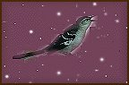

1. 'r wreg yaouang a Zant Malo, deac'h,
'r wreg yaouang a Zant Malo,
Toull he frenestr a ouele, d'an neac'h.
[Ar greg iaouank a Zant Malo
Toull he frenestr deac'h o welo] (*)
2. "Siwazh, siwazh, me zo tizhet ! [fallet]
(d.w.)
Va eostig paour a zo lazhet !
(d.w.)
3. - Livirit
din, va gwreg nevez
Perak 'ta savit kel lies
4. Kel lies diouzh va
c'hostez-me
E-kreiz an noz, diouzh [d'eus] ho kwele
5. Diskabell-kaer ha
diarc'hen [digerc'hen]
Perak 'ta savit evel-hen ?
6. - Mar savan [me], (den ker), evel-se
E-kreiz an noz, diouzh va gwele
7. Da eo ganin, setu, gwelet
[Mar é ma gan-imé gwélet]
Al listri bras mont ha donet
8. - Ne d-eo ket [gwir] (vat), evit ul lestr
Ez it [Iet c'hwi] kel lies d'ar prenestr
9. Ned-eo ket evit al listri
Nag evit daou nag evit tri
10. Ned-eo ket evit o gwelet [sellet]
Kennebeut al loar, ar stered
[Nag al loar nag ar stered]
11. Va itron [itronez], din-(me) livirit
Da berak bep noz e [a] savi?
12. - Sevel a
ran da vont da zell (
out
)
Ouzh va bugel en e gavell.
[Ma bugélik enn hé c'havel]
13. - Ned-eo ket (ken (
nebeut
)) evit [hé]
sellet
Sellet ouzh ur bugel kousket
[Vit gwelout ho pugel kousket]
14. Ned-eo ket gevier a fell d'e: (
=din
)
Da berak savit evel-se ?
15. - Va denig kozh, ma ne daerez,
Me
lavaro ar wirionez:
16. Un eostig a glevan bep noz
Er [barzh ar] jardin, war ur
bod(ig)-roz
17. Un eostig bep noz a glevan [a glevan bep nouz]
Ken ge e kan, ken dous e kan !
[A gan ken ge, a gan ken dous]
18. Ken dous e kan [a gan ken dous], ken kaer, [a gan] ken flour
Bep noz, bep noz, pa sioula [pa zioul] 'r
mor [ar mour (
stumm K.
)]!" -
19. An aotrou kozh adal m'he c'hlevas
En e galon [he c'haloun] a brederias
20. An aotrou kozh 'dal m'he c'hlevas [glévaz]
En e galon a lavaras : [hé c'haloun]
21"Pe mar 'ma (
mard' eo
) gwir, pe ma n'eo ket [pé mar ma ket]
An eostig a vo paket !"
22. Antronoz-beure, pa savas
[Ha pa strinkaz ann goulou-deiz]
Da gaout ar jardinour (
Liorzhour?!!
) (ez eas) [a ez]
23. "Jardinour mat, sentit ouzhin
Un dra zo a ra glac'har din
24. Er c'harzh [jardin] ez eus [zo] un eostig-noz
Ne ra nemet kanañ en noz
25. 'Hed an noz ne
ra 'met kanañ
Ken emaon (
=e vezan
) dihunet gantañ
26. Mar 'mañ paket fenoz [henoaz] ganit
Ur gwenneg (
?
) [skoed a] aour a roin (me] dit"
27. Ar jardinour pa'n deus klevet
Un ulmennig (
=ur skod (noeud dans du bois)!!!
) en deus stignet
[Eul las er jardin deuz léket]
28. Hag an eostig en deus paket
Ha d'e aotrou
'n'eus [deuz] hen kaset
29. Hag an aotrou, pa hen dalc'has [pan hé zalc'haz]
A-walc'h
(=gwalc'h)
e galon [he c'haloun] a
c'hoarzhas,
30. Hag e vougas, hag e daolas
[Hag o c'hoarzin, hen hé vougaz,]
War barlenn (wenn) an itron
gezh [iaouank]
31. "Dalit, dalit, va gwreg yaouank
Setu amañ hoc'h eostig
koant
32. Me 'm eus hen paket evidoc'h [evid hac'h]
'Michañs
(=hep mar)
, va dous, e plijo
deoc'h" [a blijo d'hac'h]
33. He [Ann] den yaouank, adal ma klevas [gléve]
Gant glac'har vras [braz] a lavaras [lavaré]
:
34. "Setu ma dous ha me tizhet:
Ne c'hallfont
(K - L: "'ne hellimp')
mui en em welet [gwelet]
35. Da sklaerder [skléar] 'l loar, d'ar prenester
'Vel ma oamp boazet [boézet] da ober"
[ ]:Stumm 1839. () lakaet ouzhpenn e 1845.
(*) "Ur stumm evel 'gwelo' ('gouelañ) zo en e lec'h en ur son klevet e
Kernev
. Ar ger 'deac'h' a c'hell bezañ aze diwar voaz pluenn an embanner. 'Ar greg' e-lec'h 'a wreg' ned eo nemet unan eus ar
c'hemmadurioù-a-dreuz
a gaver en embannadur kentañ. Daoust ha sentusoc'h e ve bet Kervarker ouzh Ar Gonideg eget ma'z eo bet ouzh an Ao. Herri?
Perak en-deus kavet gwell K. reiñ d'ar son liv rann-yezh
Leon
? "N'eus nemet e Leon, emezañ, ma skriver ha ma tistager "eostik"; e-lec'h-all e klever "estik"... ne c'hell dan ebet lavarout e ouie Mari hiroc'h a vrezhoneg eget an nebeut grioù a gaver en he skridoù...Deuet eo dija ar ger-mell gallek "le" da vezañ lod eus an anv "l'aostic": gallekaet evel anvioù tiegezh 'Lozac'h' pe 'Leveder' h.a." (Fañch Elies-Abeozen e "En ur lenn Barzhaz-Breizh").